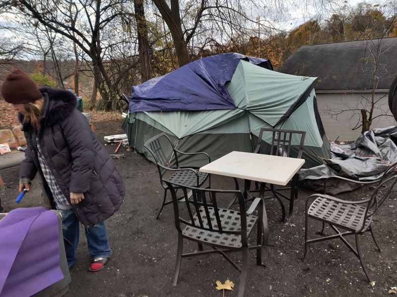

Timeline photos
Well... I've clearly got @[100064805494040:2048:City of Akron, Ohio - Mayor's Office] attention now. They apparently just came over and said if I don't completely clear up Harley's area they'll fine me $500. (This is a picture of her area.)
Dan Horrigan is one of the most fragile people I've ever met. He is obsessed with his image. Which is ironic because he never does himself any favors.
Watch... they will target me all winter long trying to get me to take down these tents. I'm not taking them down until every single homeless person in Akron has a place to stay.
It's going to be different this time.